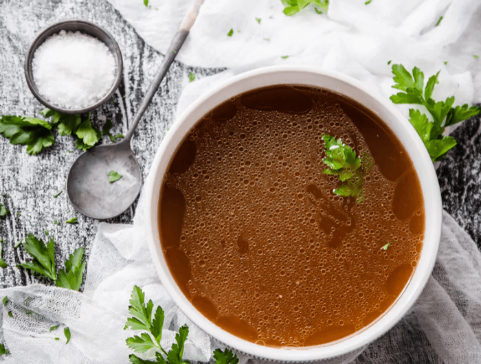

Knochenbrühe
(10 Stunden, 4 Port., F: 7 g, K: 0 g, E: 0 g)

Zutaten
- 4 Rinder- oder Schweineknochen, 2 Zwiebeln, 2 Karotten, 2 TL Olivenöl, 500 ml Wasser, 2 TL Apfelessig, Salz & Pfeffer, optional: Knoblauch, frischer Basilikum, Thymian oder Rosmarin
Zubereitung
- Den Ofen auf 200°C vorheizen. Backpapier auf einem Blech auslegen.
- Die Knochen und alle weiteren Zutaten auf das Backpapier legen, Olivenöl darüber geben und in den Ofen schieben.
- Nach ca. 60 Minuten Knochen und Gemüse herausnehmen. Wenn gewünscht, nach ca. 40 Minuten eine Tasse Wasser darüber geben, um zu verhindern, dass die Zutaten anbrennen.
- Den Inhalt auf dem Blech in einen großen Topf geben. Wasser und Apfelessig dazu geben und 10-15 Minuten aufkochen lassen. Dann die Hitze reduzieren und 8-24 Stunden köcheln lassen. Wenn die Brühe eine saftige dunkle Farbe angenommen hat, ist sie verzehrfertig.
- Die Knochen und das Gemüse mit einem Sieb entfernen. Brühe nach Belieben weiter köcheln lassen, um die Konzentration zu erhöhen.
- Bei einer Lagerung im Kühlschrank die Brühe innerhalb von 5 Tagen verzehren, im Gefrierfach innerhalb von 3 Monaten.
Originalrezept unter: Dietdoctor.com